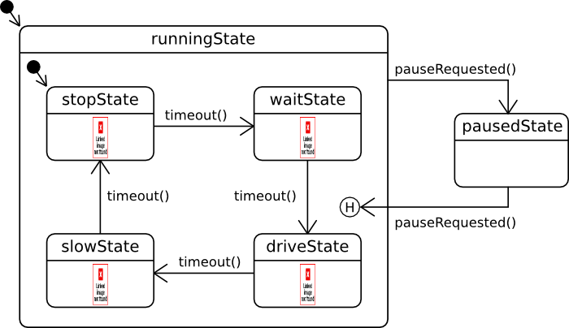

Traffic Light Example
Files:
- statemachine/trafficlight/assets/TrafficLight.qml
- statemachine/trafficlight/assets/main.qml
- statemachine/trafficlight/src/TrafficLightApp.cpp
- statemachine/trafficlight/src/TrafficLightApp.hpp
- statemachine/trafficlight/src/TrafficLightController.cpp
- statemachine/trafficlight/src/TrafficLightController.hpp
- statemachine/trafficlight/src/main.cpp
- statemachine/trafficlight/trafficlight.pro
Description
The Traffic Light example shows how to use The State Machine Framework to implement the control flow of a traffic light.

Overview
In this example we'll learn how to use the QStateMachine, QState and QHistoryState classes to model our business logic with a state machine.
The state chart that describes the business logic looks like the following:

We have the two top-level states 'runningState' and 'pausedState' and the user can switch between them by clicking the 'Pause' button. The 'runningState' has four child states: 'stopState', 'waitState', 'driveState' and 'slowState' which represent the four possible phases of a traffic light. The transition between these four states is triggered via the timeout() signal of a QTimer. The history state, that is entered when coming back from the 'pausedState', ensures that the state will be activated which has been active when the 'runningState' was left before.
The UI
The UI of this sample application consists of a traffic light, a 'Pause' and a 'Quit' button.
The business logic of the application is encapsulated in the class TrafficLightController, which is exported to the UI as '_trafficLightController'.
If the user clicks the 'Pause' button, the pause() slot of the TrafficLightController object is invoked and if the user clicks on the 'Quit' button, the quit() slot of the Application object is invoked.
Button { text: qsTr ("Pause") onClicked: { _trafficLightController.pause(); } } Button { text: qsTr ("Quit") onClicked: { _app.quit(); } }
The traffic light is implemented in TrafficLight.qml and instantiated inside main.qml
TrafficLight { id: trafficLight controller: _trafficLightController layoutProperties: DockLayoutProperties { horizontalAlignment: HorizontalAlignment.Center verticalAlignment: VerticalAlignment.Center } }
The TrafficLight object has a custom property 'controller' which points to the TrafficLightController object. All three colors of the TrafficLight are implemented as ImageViews that show different images depending on their state (on/off). The background image contains the colors that represent the 'off' state and the 'on' state is represented by overlay images
// The red light. ImageView { id: redLight layoutProperties: AbsoluteLayoutProperties { positionX: 40 positionY: 41 } imageSource: "asset:///images/red_light.png" opacity: root.controller.redOn ? 1.0 : 0.0 } // The yellow light. ImageView { id: yellowLight layoutProperties: AbsoluteLayoutProperties { positionX: 39 positionY: 196 } imageSource: "asset:///images/yellow_light.png" opacity: root.controller.yellowOn ? 1.0 : 0.0 } // The green light. ImageView { id: greenLight layoutProperties: AbsoluteLayoutProperties { positionX: 38 positionY: 351 } imageSource: "asset:///images/green_light.png" opacity: root.controller.greenOn ? 1.0 : 0.0 }
To switch a color on or off we simple change the opacity of the overlay image. In this example the opacity properties are bound against the appropriated properties of the TrafficLightController object.
TrafficLightController
The TrafficLightController is the central class of this application. It contains the QStateMachine instance that drives the business logic and provides the properties that represent the state of the single traffic light colors
class TrafficLightController : public QObject { Q_OBJECT // the state properties for the single lights Q_PROPERTY(bool redOn READ redOn WRITE setRedOn NOTIFY redOnChanged) Q_PROPERTY(bool yellowOn READ yellowOn WRITE setYellowOn NOTIFY yellowOnChanged) Q_PROPERTY(bool greenOn READ greenOn WRITE setGreenOn NOTIFY greenOnChanged) // the state property that reflects whether the traffic light is currently paused Q_PROPERTY(bool paused READ paused WRITE setPaused NOTIFY pausedChanged)
Inside the constructor of TrafficLightController we initialize the properties with their default values, set up the state machine and start the timer that is used to trigger the transitions between the traffic light phases.
TrafficLightController::TrafficLightController(QObject *parent) : QObject(parent) , m_redOn(false) , m_yellowOn(false) , m_greenOn(false) , m_paused(false) , m_timer(new QTimer(this)) { // Create and start the state machine setupStateMachine(); // Start the timer to trigger state changes m_timer->start(); }
Inside setupStateMachine() we create the QStateMachine object and all the QState objects.
void TrafficLightController::setupStateMachine() { /** * The state machine consists of two top-level states * - runningState * - pausedState * * The runningState consists of 4 child states that represent the 4 phase * of a traffic light cycle: * - stopState: The red light is on, cars have to wait * - waitState: The red and yellow lights are on, cars can prepare to drive * - driveState: The green light is on, cars can drive * - slowState: The yellow light is on, cars have to slow down and stop * * Additionally the runningState contains a QHistoryState as child state, which is * used when going back from pausedState to runningState to ensure that we continue * execution at the same state we have been before we switched to the pausedState. */ // Create the state machine QStateMachine *machine = new QStateMachine(this); // Create the two top-level states QState *runningState = new QState(machine); QState *pausedState = new QState(machine); // Create the child states for the runningState QState *stopState = new QState(runningState); QState *waitState = new QState(runningState); QState *driveState = new QState(runningState); QState *slowState = new QState(runningState); QHistoryState *historyState = new QHistoryState(runningState); // Define which properties should be modified when entering a state: /** * Depending on whether we are in runningState or pausedState, the 'paused' property * of the TrafficLightControl object will be set to false/true. */ runningState->assignProperty(this, "paused", false); pausedState->assignProperty(this, "paused", true); /** * For each phase state we define which light should be enabled and * how long the phase should last. */ stopState->assignProperty(this, "redOn", true); stopState->assignProperty(this, "yellowOn", false); stopState->assignProperty(this, "greenOn", false); stopState->assignProperty(m_timer, "interval", 5000); waitState->assignProperty(this, "redOn", true); waitState->assignProperty(this, "yellowOn", true); waitState->assignProperty(this, "greenOn", false); waitState->assignProperty(m_timer, "interval", 2000); driveState->assignProperty(this, "redOn", false); driveState->assignProperty(this, "yellowOn", false); driveState->assignProperty(this, "greenOn", true); driveState->assignProperty(m_timer, "interval", 5000); slowState->assignProperty(this, "redOn", false); slowState->assignProperty(this, "yellowOn", true); slowState->assignProperty(this, "greenOn", false); slowState->assignProperty(m_timer, "interval", 2000); // Define the transitions between the single states: /** * We cycle through the phase states whenever the timer emits the timeout() * signal. */ stopState->addTransition(m_timer, SIGNAL(timeout()), waitState); waitState->addTransition(m_timer, SIGNAL(timeout()), driveState); driveState->addTransition(m_timer, SIGNAL(timeout()), slowState); slowState->addTransition(m_timer, SIGNAL(timeout()), stopState); /** * If we are in runningState and the pauseRequested() signal is emitted (that happens * when the pause() slot has been invoked) then we go to the pausedState. * If we are now in the pausedState and the pauseRequested() signal is emitted again, * we go to the historyState which will forward us to the phase state we have been in * when we left the runningState. */ runningState->addTransition(this, SIGNAL(pauseRequested()), pausedState); pausedState->addTransition(this, SIGNAL(pauseRequested()), historyState); // Define which child state should be the initial state runningState->setInitialState(stopState); machine->setInitialState(runningState); // Start the state machine machine->start(); }
The assignProperty() calls on the QState objects ensure that whenever the state is entered, the given value will be assigned to the named property on the passed object. So whenever the 'driveState' is entered, the 'greenOn' property of the TrafficLightController object will be set to true, in all other states to false. When the 'greenOn' property is changed, the properties setter method setGreenOn() will be invoked.
void TrafficLightController::setGreenOn(bool on) { if (m_greenOn != on) { m_greenOn = on; emit greenOnChanged(); } }
Inside this method we check whether the state has changed, and only if that's the case we update the internal state and emit the change notification signal.
The next step inside setupStateMachine() is to wire up the states with transitions. As trigger for the transitions between the traffic light phases the timeout() signal of the QTimer object is used. For the transitions between 'runningState' and 'pausedState' the pauseRequested() signal of the TrafficLightController object is used, which is emitted whenever the user clicks on the 'Pause' button
void TrafficLightController::pause() { emit pauseRequested(); }